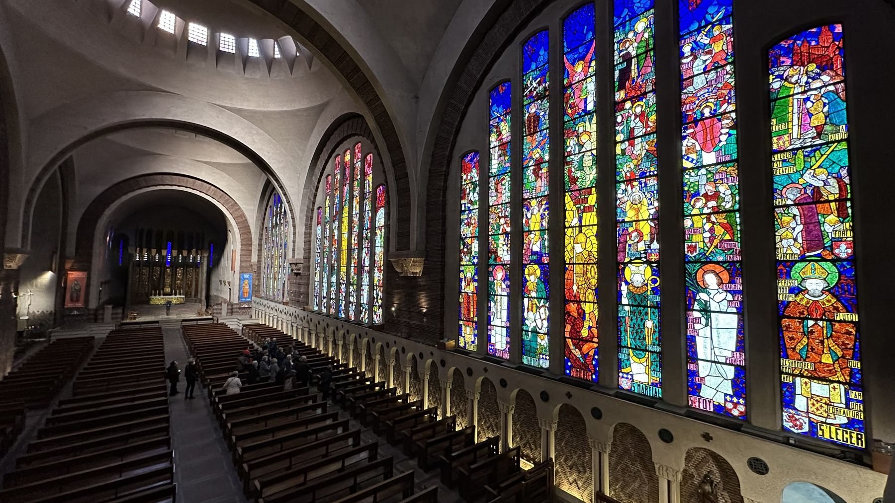
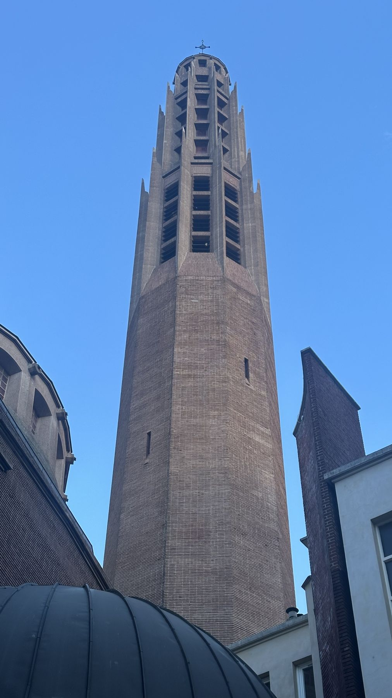

Schola Sainte-Odile
Chœur de l'église Sainte-Odile, Paris 17e, au service de la liturgie traditionnelle.

Quand l'entendre
La Schola chante tous les dimanches et jours de fête à la messe de 9 h 30, à certaines grandes fêtes en semaine à 19 h, et parfois aux vêpres.
Découvrez la page Prochains offices.
Répertoire
À chaque messe, la Schola chante l'intégralité du propre grégorien (introït, graduel, alléluia ou trait, offertoire, communion) et l'ordinaire tiré du Kyriale. Elle chante également des motets et des cantiques traditionnels. La Schola veille à favoriser complémentarité et équilibre entre prière, chant et grand répertoire d'orgue.
Vous trouverez un certain nombre de partitions sur la page Partitions.
Contacts
- Chefs de chœur
- Gilles Lacombe et Laure Ogeron
- Coordinatrice
- Nicole de Nanteuil
- Responsable du site
- Philippe Guy
- scholasainteodile@gmail.com
L'église Sainte-Odile
Construite par Jacques Barge entre 1935 et 1946, l'église Sainte-Odile est un monument de l'Art déco parisien, inscrit aux monuments historiques. Ses grandes verrières sont de François Décorchemont et son retable de cuivre de Barriot.

Adresse et accès
- Adresse
- Église Sainte-Odile, 2, avenue Stéphane-Mallarmé, 75017 Paris
- Transports
- Métro ligne 3 et tram T3b, Porte de Champerret
Chanter avec nous
La Schola accueille de nouvelles voix. Tout est expliqué sur la page Nous rejoindre.